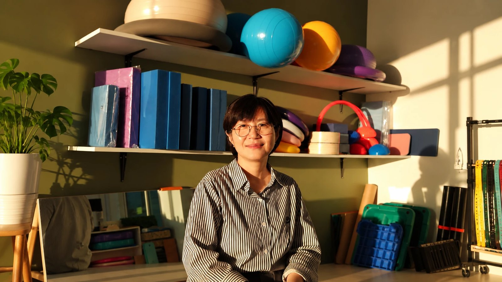

이주민 인터뷰
이재은 강사님
인터뷰 01 / 04
이재은 강사님: 나만의 속도로 일하며 살아가는 법

인터뷰 원고에서 고른 두세 줄이 들어갈 자리예요. 이 사람이 어떻게 섬사람이 되어 가는지 짧게 보여 줘요.
인터뷰 읽기


가리개를 눌러 창을 열어 보세요
스크롤하면 제주로 들어가요
이주민 인터뷰
이재은 강사님
인터뷰 01 / 04
인터뷰 원고에서 고른 두세 줄이 들어갈 자리예요. 이 사람이 어떻게 섬사람이 되어 가는지 짧게 보여 줘요.
인터뷰 읽기
이주민 인터뷰
안세은 선생님 · 아인학교
인터뷰 02 / 04

인터뷰 원고에서 고른 두세 줄이 들어갈 자리예요. 이 사람이 어떻게 섬사람이 되어 가는지 짧게 보여 줘요.
인터뷰 읽기
이주민 인터뷰
파랑오브레코즈
인터뷰 03 / 04

인터뷰 원고에서 고른 두세 줄이 들어갈 자리예요. 이 사람이 어떻게 섬사람이 되어 가는지 짧게 보여 줘요.
인터뷰 읽기
이주민 인터뷰
에밀리
인터뷰 04 / 04
인터뷰 원고에서 고른 두세 줄이 들어갈 자리예요. 이 사람이 어떻게 섬사람이 되어 가는지 짧게 보여 줘요.
인터뷰 읽기VOICES OF JEJU낭만 뒤에 숨겨진, 진짜 제주살이 한 줄
처음엔 여행자였고, 지금은 이웃이 된 사람들.
— 이제주민 편집팀
그 사이 어딘가의 이야기를 모으고 싶었어요.
02
이야기를 준비하고 있어요.